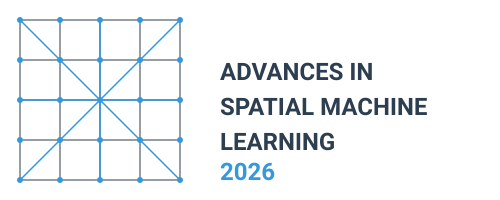
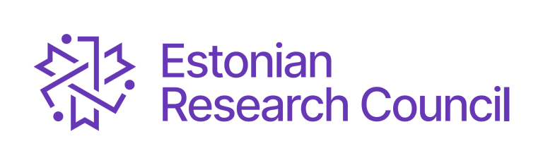

Advances in Spatial Machine Learning 2026
A Two-Day Scientific Workshop

Workshop Overview
This two-day scientific workshop aims to bring together leading researchers in the field of spatial machine learning. Unlike many conferences that focus on showcasing achievements, our goal is to address unsolved issues and open questions, fostering innovation and collaboration.
Key Topics (preliminary)
- Validation and Preservation of Spatial Patterns: Ensuring models provide accurate local predictions while preserving important spatial patterns.
- (Spatial) xAI
- How to ensure that the spatial ML model is useful?: how to avoid overfitting, do we need better algorithms or better training and validation data?
- Common mistakes in spatial ML
- New methods/emerging trends (e.g., foundational models, conformal predictions, etc.)
- An “open” session - we welcome participants to propose relevant topics.
Location and Date
The workshop will take place 9-10 April 2026 at the University of Tartu Library, W. Struve tn 1, 50091 Tartu, Estonia.
Program
| Day/time | Topic |
|---|---|
| Wed, Apr 8 | |
| 19:00–… | Ice breaker at Gunpowder cellar |
| Thu, Apr 9 | |
| 9:00–10:30 | Introductions |
| 10:30–11:00 | Coffee break/ Posters |
| 11:00–12:30 | Session: Common mistakes/challenges in spatial ML |
| 12:30–13:30 | Lunch/ Posters |
| 13:30–15:00 | Session: How to ensure that the spatial ML model is useful? |
| 15:00–15:30 | Coffee break/ Posters |
| 15:30–17:00 | Session: Spatial validation |
| 18:00–19:30 | City Excursion |
| 19:30–… | Joint dinner at Kolm Tilli |
| Fri, Apr 10 | |
| 9:00-10:30 | Session: xAI in spatial ML |
| 10:30-11:00 | Coffee break /Posters |
| 11:00-12:30 | Emerging trends: Foundation models and DGGS for spatial ML |
| 12:30-13:30 | Lunch /Posters |
| 13:30-15:00 | Wrap-up and future plans |
Open session: posters
If you would like to present a poster related to your work in spatial machine learning, we will have a poster session area available during all coffee breaks and lunch sessions. We especially encourage PhD students to bring and present their posters.
Participants
We invited researchers actively working on spatial machine and deep learning:
- Alexander Brenning
- Carmelo Bonannella
- Laura Poggio
- Felix Henkel
- Jonas Schmidinger
- Jonathan Frank
- Lily-belle Sweet
- Mahdi Khodadadzadeh
- Alexander Kmoch
- Liina Hints
- Jeonghwan Choi
- Evelyn Uuemaa
- Marta Jemeljanova
- Hanna Meyer
- Jakub Nowosad
Expected Outcomes
By bringing together experts in the field, we anticipate:
- Identifying key challenges and research priorities in spatial machine learning
- Fostering collaborations between different research groups
- Developing guidelines for best practices in spatial machine learning documentation and validation
- Generating ideas for future research projects and potential funding opportunities
This workshop represents a unique opportunity to shape the future of spatial machine learning in ecological research by focusing on open questions and challenges.
Organizers
Supported by
